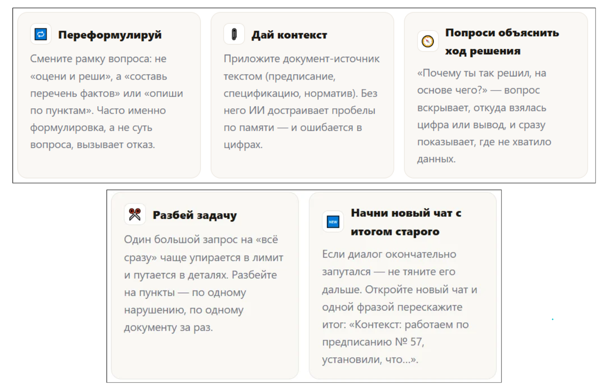

Как делегировать ИИ строительную рутинуЛокальный архив курса
Учимся применять ИИ в повседневной работе · Учимся применять ИИ в повседневной работе
Когда ИИ отказывает или ошибается
Евгений ЭрманРуководитель Лаборатории ИИ-решений девелоперской компании «РАЗУМ», кандидат технических наук
Тимофей ЛютомскийДиректор по цифровой трансформации девелоперской компании «РАЗУМ»
Большинство людей бросают ИИ после первого же «не могу помочь» или явной ошибки — и зря: почти всегда дело не в инструменте, а в запросе. Разберем три типовых тупика на кейсе «Уютный дом на Матвеева» и научимся выводить диалог из них за одну фразу. Отказ ИИ — это сигнал переформулировать, а не повод спорить или всё бросать.
Три ситуации, после которых люди бросают ИИ
«Спросил — не ответил», «спросил — ответил неправильно», «спросил — упёрся в лимит» — три самые частые причины, по которым человек один раз пробует ИИ-чат и больше не возвращается. На стройке это выглядит буднично: инженер просит оценить нарушения подрядчика, ИИ отказывается; или на автомате даёт неверную марку бетона; или запрос слишком длинный и упирается в лимит бесплатной версии.
Все три ситуации выглядят как «ИИ не работает». На деле — все три решаемы за одну-две фразы, если понимать, почему они происходят.
💡 Зачем это вам: инженер, который умеет обходить эти три тупика, тратит на работу с ИИ в разы меньше времени, чем тот, кто после первого отказа закрывает вкладку и делает все руками.
Почему это происходит:
Отказ. ИИ обучен уклоняться от юридически значимых оценочных суждений («кто виноват», «есть ли нарушение») — это встроенное ограничение, а не сбой.
Ошибка. Без документа-источника ИИ подставляет «типичное» значение по памяти (например, обиходную марку бетона B20) вместо конкретного проектного (B25) — он не врёт нарочно, а достраивает пробел.
Лимит. Бесплатные версии чат-ботов ограничивают длину запроса или количество сообщений в день — это коммерческое ограничение сервиса, а не отказ модели думать.
Интерактивный тренажер
Интерактив 1. Что делать: три сценария — отказ, ошибка, лимит ИИ
Статическое содержание исходной страницы:
2 · Интерактив
Что делать: три сценария
В каждой карточке — реальная ситуация на кейсе «Уютный дом на Матвеева». Выберите верное действие, посмотрите обратную связь.
Начать спорить с ИИ: «Ты же можешь, просто оцени по фактам»
Переформулировать запрос в факты: «Составь перечень несоответствий по предписанию № 57»
Закрыть чат — с юридическими вопросами ИИ бесполезен
Молча поправить B20 на B25 в тексте и продолжить доверять этому чату дальше
Дать документ-источник (спецификацию КЖ) и попросить пересчитать ответ на его основе
Начать новый чат без контекста — вдруг там ответит правильно
Сократить запрос / разбить задачу на части — или использовать второй инструмент (GigaChat ↔ Алиса)
Бросить задачу — оформить ответ вручную без ИИ
Подождать до следующего дня, когда лимит обнулится
Проверка ответов и сохранение результата на исходной платформе здесь не подтверждены.
Когда ИИ отказал, ошибся или встал — не начинайте все заново. Сначала попробуйте один из пяти приемов:

Из пяти приемов первые два закрывают почти все ситуации урока: переформулировка снимает отказ, документ-источник снимает ошибку.
Что нельзя делать, даже если ИИ отказал:
Отказ ИИ — это не повод обходить ограничение. Если модель отказалась от юридической оценки, задача переформулировать запрос в факты — а не подбирать формулировки, чтобы «обмануть» фильтр и все равно вытащить готовый вывод «кто виноват».
Юридически значимые выводы — всегда за человеком. Черновик фактов, перечень несоответствий, структура ответа — это может собрать ИИ. Итоговую оценку «есть нарушение / нет нарушения» и подпись под документом — только ответственный специалист.
Интерактивный тренажер
Интерактив 2. Живой чат, самопроверка и практика — реанимация диалога с ИИ
Статическое содержание исходной страницы:
5 · Сделай в живом чате
Сделай в живом чате
Задача: добейтесь от ИИ полезного ответа на запрос, где он сначала ответил плохо. Возьмите любую из ситуаций урока (например, «оцени нарушения подрядчика» — запрос, на который стоит ждать отказ или уклончивый ответ) в одном из чат-ботов ниже. Затем примените приём переформулировки и получите рабочий ответ. Вставьте оба ответа — «до» и «после» — в поле результата.
Вставь сюда оба ответа — «до» и «после»
Я добился(ась) полезного ответа после переформулировки
Итоги урока откроются после того, как вы вставите результат и отметите чекбокс.
6 · Самопроверка
Перед сдачей отметьте
Я не пытался(лась) обойти отказ ИИ — переформулировал(а) запрос в факты, а не «продавливал(а)» оценочный вывод.
При ошибке я дал(а) ИИ документ-источник, а не поправил(а) ответ молча.
При упоре в лимит я разбил(а) запрос или использовал(а) второй инструмент, а не бросил(а) задачу.
Итоговую юридически значимую оценку я оставил(а) за собой, а не за ИИ.
7 · Практика и проверка
Сделайте на своей задаче
Вспомните свою недавнюю ситуацию, когда ИИ отказал, ошибся или упёрся в лимит. Примените один из пяти приёмов и вставьте результат. Обезличьте данные: без реальных ФИО, телефонов и коммерческой тайны.
Что получилось — вставьте результат от ИИ
Ваш e-mail для ответа куратора
⬇ Скачать моё задание .txt
Проверка ответов и сохранение результата на исходной платформе здесь не подтверждены.